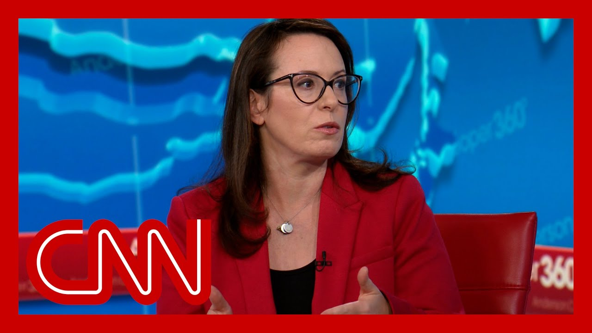

来B站一起耍【Global每日英语简报】
【哈伯曼解读特朗普在与加拿大谈判中的诉求】
Summary: The president had a meeting with Canada's Prime Minister, Mark Carney, and publicly expressed optimism about improved relations, though his unconventional remarks about Canada potentially becoming the 51st state and tariffs raised questions.
摘要： 总统与加拿大总理马克·卡尼会面，并公开对改善关系表示乐观，但他关于加拿大可能成为第51个州及关税的非传统言论引发质疑。

⏱️ Estimated Reading Time: 14 min
The president says he had a great meeting at the white House today with Canada's Prime Minister, Mark Carney, and the Prime Minister.
总统表示，他今天在白宫与加拿大总理马克·卡尼进行了很好的会晤。
He said afterwards, quote, I feel better about relations in many respects.
会后他表示：“我在很多方面对两国关系感觉更好了。”
So publicly at least, both sides seem pleased with the meeting, whether it was a typical meeting, though, or would be for any president not named Donald Trump.
至少公开来看，双方似乎对会晤感到满意，尽管这是否是一次典型会晤，或对其他非特朗普总统而言是否典型，是另一个问题。
That's another question, because here's what else Mr. Trump said just a few hours afterwards.
这是另一个问题，因为几小时后特朗普还说了以下内容。
As far as calling him Governor Carney. No, I haven't done that yet.
至于称呼他为卡尼州长，我还没那么做。
And maybe I won't.
也许我不会。
That's the first thing I'd say, suggesting that maybe he won't, but maybe he will call the newly elected leader of our closest neighbor governor as though Canada where the 51st state not typical except these days.
这是我要说的第一点，暗示他可能不会，但也可能将我们最亲密邻国的新任领导人称为州长，仿佛加拿大是第51个州——这在过去并不典型，但如今却有点是了。
It kind of is.
现在确实有点这样。
Nor is it typical for a visiting Canadian Prime Minister have to say twice to the president's face that his country is not for sale after his host, when asked about it, starts almost daydreaming out loud the this president and Mr. Prime Minister a lot of categories Foster's to Mr. president a view which said that Canada should become the 51st state.
同样不典型的是，来访的加拿大总理不得不两次当面告诉总统他的国家“不出售”，而东道主总统在被问及时，却几乎公开幻想加拿大应成为第51个州。
We're not joking.
我们没在开玩笑。
No no.
不不。
Well I still believe that but but you know it takes two to tango, right.
嗯，我仍然这么认为，但你知道这需要两厢情愿，对吧。
But, I think, you know, it's, it would really be a wonderful marriage because it's it's two places they get along very well.
但我觉得，这将是一段美妙的结合，因为两地相处非常融洽。
They like each other a lot.
他们彼此非常喜欢。
Well, if if, if I may, as you know from real estate, there are some places that, are never for sale.
呃，如果可以的话，正如您从房地产中知道的，有些地方是永远不出售的。
That's true.
确实如此。
we're sitting in one right now.
我们现在就坐在其中一个地方。
You know, Buckingham Palace that you visited as well.
比如您也参观过的白金汉宫。
and, having met with, the owners of Canada over the course of the campaign, last several months, it's not for sale.
而且，经过过去几个月竞选期间与加拿大“业主们”的会面，加拿大不出售。
Won't be for sale.
永远不会出售。
ever.
永远。
A few minutes later, this time, after a question on tariffs, Prime Minister Carney came back to the 51st state issue.
几分钟后，在被问及关税问题时，卡尼总理再次回到第51个州的话题。
Mr. president, is there anything the Time Minister can say to you today to change your mind on tariffs in Canada?
总统先生，总理今天能否说些什么来改变您对加拿大关税的看法？
Tariffs on cars tariff in Canada?
汽车关税？加拿大的关税？
Is there anything he can say to you and of course of your needs of him today to get you to lift tariffs on.
他能否说些什么，当然也要满足您今天对他的要求，来让您取消关税？
No.
不。
Why not.
为什么不行？
Just the way it is.
事情就是这样。
What's.
什么？
I mean if Canadians don't want it.
我是说如果加拿大人不想要。
Would you respect that.
您会尊重吗？
Sure I would.
当然会。
But this is not necessarily a one day deal.
但这不一定是朝夕可成的事。
This is over a period of time they have to make that decision.
他们需要时间来做决定。
Yes.
是的。
Go ahead.
请继续。
Yeah, if I may.
好的，如果可以的话。
well, I respectfully Canadians view on this and is not going to change on the 51st day.
我尊重加拿大人的观点，这一点在第51天也不会改变。
The president also talked tariffs and showed him patients are being asked about whether he's reached any trade agreements with any country.
总统还谈到关税，并在被问及是否与任何国家达成贸易协议时表现出耐心。
So far.
截至目前。
Just to finish, we also have a situation because everyone says when, when, when are you going to sign deals?
最后，我们面临的情况是，所有人都在问“何时”签署协议。
We don't have to sign deals.
我们不必签署协议。
We could sign 25 deals right now, Howard, if we want it.
霍华德，如果我们愿意，现在就能签25个协议。
We don't have to sign a deal.
我们不必签协议。
They have to sign deals with us.
是他们得和我们签协议。
Well, keep an eye on us.
那就拭目以待吧。
The president is now just three days shy of a month into his three month tariff pause time, which he said would be used to strike trade agreements with the rest of the world, especially China, which he exempted from the pause and raised tariffs on to 145%.
总统的三个月关税暂停期已过去近一个月，仅剩三天。他称此期间将用于与世界其他国家达成贸易协议，尤其是中国——但中国被排除在暂停之外，关税被提高至145%。
So far, however, the administration has announced zero agreements with zero countries, and by the sound of the president's answer, there might not be any.
然而截至目前，政府尚未宣布与任何国家达成协议，而从总统的回答来看，可能不会有任何协议。
Which, by the way, is not surprising.
这并不令人意外。
In normal times.
在正常时期。
In past administrations, trade deals have taken many, many months, even years to hammer out the idea that even a framework for trade agreements would happen this fast was unlikely, but this president did put a timer on it.
往届政府的贸易协议需耗时数月甚至数年才能敲定，连框架协议都如此迅速本不太可能，但本届总统确实设定了时限。
And when asked more specifically about China, the administration's responses have been all over the place.
在被具体问及中国时，政府的回应却前后矛盾。
After President said that you have spoken to the presidency.
总统称你已与中方领导人通话。
When did that happen?
何时发生的？
China says it hasn't happened.
中方表示并无此事。
So numerous times.
多次如此。
So can you clarify, is the administration talking to Beijing specifically about tariffs or not?
能否澄清，政府是否正与北京专门讨论关税问题？
Well, we're not going to talk about who's talking to whom.
我们不会讨论谁在与谁对话。
Setting the stage for a deal with China.
这是在为与中国达成协议铺路。
What does that mean?
这意味着什么？
Has the president spoken directly with XI and I don't have anything to read out on a direct talk between the President and President XI.
总统是否直接与习主席通话？我暂无任何关于两位元首直接通话的消息可宣读。
Have you had any conversations with your Chinese counterpart?
你与中国对口官员有过对话吗？
Has there been anything between you and the Chinese?
你与中方之间有任何接触吗？
I think we've had, soft, the way I would say this is soft on trays.
我认为我们有过——委婉地说——试探性接触。
You know, through an intermediary and those kind of comments.
通过中间人等非正式渠道。
Well, that's for the president.
这由总统决定。
He was asked about China during a lengthy interview about two weeks ago with time magazine.
约两周前，他在接受《时代》杂志长篇采访时被问及中国。
The question was, Will you call President XI if he doesn't call you president Trump said no.
问题是：“如果习主席不打电话给您，您会打给他吗？”特朗普总统回答：“不。”
No you won't.
不会打。
Nope.
不会。
Question has he called you yet?
问题：他给您打过电话了吗？
The president?
总统先生？
Yep.
打过。
When did he call you?
何时打的？
The president, he's called.
总统先生，他打过。
And I don't think that's a sign of weakness on his behalf.
我不认为这代表他示弱。
Now, the Chinese have consistently denied that any such call happened today.
而中方始终否认有过此类通话。
Testifying before Congress under oath.
财政部长史蒂文·姆努钦在国会宣誓作证时表示。
Treasury Secretary Scott Bezzant said that the two countries have not even started talking trade or there are 18 very important trading relationships.
两国甚至尚未开始贸易谈判。
we are currently, negotiating with 17 of those trading partners.
我们目前正与其中17个贸易伙伴谈判。
China we have not engaged in negotiations with as of yet.
与中国尚未展开谈判。
Well, joining me now, CNN political analyst, New York Times senior white House correspondent Maggie Haberman.
现在连线CNN政治分析师、《纽约时报》高级白宫记者玛吉·哈伯曼。
What stood out to you about the meeting with Carney?
卡尼会晤中令你印象最深的是什么？
many things.
很多方面。
The main one is that all of these, foreign leaders go into the Oval Office with President Trump in something of a no win situation, because the president sets the terms of what he wants it to be.
主要是所有外国领导人与特朗普总统在椭圆形办公室会面时都处于某种无胜算境地，因为总统设定了他想要的条款。
He did a truth post before this meeting started.
会晤前他发了篇“真相帖”。
He has obviously been talking about the 51st state.
他显然一直在谈论第51个州。
He has been talking about trade.
他一直在谈论贸易。
And so Carney, who has been pretty tough and who was elected in part as backlash to Trump in Canada had a choice, to make on how he was going to handle it.
因此，以对特朗普强硬著称、某种程度上因加拿大反特朗普情绪当选的卡尼，必须决定如何应对。
He came in clearly with a prepared line, which was candid is not for sale.
他显然准备了台词——“加拿大不出售”。
But then he had to sort of navigate not having a, you know, Zelensky type moment, with Trump where they're in a standoff.
但他还得避免与特朗普陷入泽连斯基式的对峙时刻。
He seemed to have.
他似乎做到了。
But again, it was all on President Trump.
但一切仍取决于特朗普总统。
Well, it was so interesting.
这非常有趣。
I mean, you you the only thing to compare it to is kind of the Zelensky on one end of the spectrum, the very far right.
唯一可类比的是光谱最右端的泽连斯基。
And then there's the British prime minister presenting the like a golden letter from the Buckingham Palace with like double plus good invitation, right.
另一端则是英国首相呈递白金汉宫金函、展现“双倍善意”邀请。
And not and not being in total disagreement with him but, you know, occasionally or not being in total agreement with him, occasionally voicing some disagreement when they were in their separate podiums.
并非完全反对他，但偶尔在各自讲台时表达些分歧。
this is this is somewhere on that spectrum.
卡尼处于这个光谱的某处。
It is it is far closer to Keir Starmer, the British PM, than Zelensky.
更接近英国首相基尔·斯塔默而非泽连斯基。
The Prime Minister also seemed to have.
总理似乎还准备了。
I don't know if the thing about the real estate deal was a planned out, but it seemed like it sure sounded like it.
不确定房地产比喻是否预先设计，但听起来确实像。
and it was interesting to see the president kind of responding.
而总统的回应也很有趣。
Well, it's interesting, Anderson, because all of these foreign leaders do work.
安德森，有趣的是所有外国领导人都做了功课。
I mean, it's not uncommon that you would workshop how you're going to handle meeting with a U.S. president, but the extent to which they all have to do some form of Prep, because they know they're going to end up in a bind with with President Trump.
为应对美国总统会晤做准备并不罕见，但他们现在必须做某种准备，因为他们知道最终会与特朗普总统陷入僵局。
He clearly had practice saying something that would both disarm Trump and also make his point.
卡尼明显练习过既能化解特朗普攻势又能表明立场的说辞。
And he did that.
他做到了。
Trump did respond.
特朗普确实回应了。
He laughed.
他笑了。
But then he went right back to his point.
但随即又回到自己的观点。
I want to play something else that the president said in a bilateral meeting.
我想播放总统在双边会议中的另一段话。
That was one.
这段是：
We don't really want cars from Canada, and we put tariffs on cars from Canada.
我们并不真正需要加拿大的汽车，却对加拿大汽车加征关税。
And at a certain point, it won't make economic sense for Canada to build those cars.
到某个时候，加拿大生产这些汽车将不再经济。
We really don't want Canadian steel, and we don't want Canadian aluminum and various other things, because we want to be able to do it ourselves.
我们也不需要加拿大钢铁、铝等产品，因为我们想自主生产。
Is it clear what kind of outcome he's looking for?
他想要的结果明确吗？
No, and I'm not sure that it's clear to him what kind of actual specific outcome he's looking for, other than one where the U.S. can say we're on top and somebody else is not.
不明确，甚至不确定他本人是否清楚具体想要什么结果，除了让美国能宣称“我们赢了，别人输了”。
Whatever the outcome is with Canada, with most of these other trading partners, it will look like some kind of a framework of a deal.
无论与加拿大或其他贸易伙伴的结果如何，都只会是某种协议框架。
And Trump will say, we want this is what I want it.
特朗普会说：“这就是我想要的。”
It won't be an actual trade deal to the point you made earlier.
正如你之前所说，这不会是真